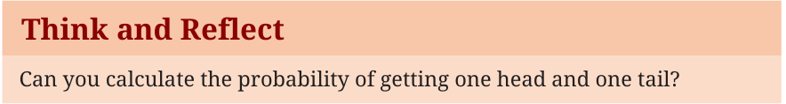

Also, the theoretical probabilities of each outcome are mentioned on the branch representing that outcome. Theoretical Probability (P) = Number of favourable outcomesNumber of possible outcomes . Let us consider the event of getting Heads twice. This is represented by the outcome HH.
Probability of \(HH = \frac{1}{4} = 0.25\) or 25%.

- 1.There are two fruit baskets A and B. Basket A has one apple and two
oranges. Basket B has one banana and one mango. You randomly pick one fruit from each basket.
- (i)Draw a tree diagram showing all possible pairs of fruits.
- (ii)List the sample space.
- (iii)What is the probability of picking one apple and one
banana?
- 2.Let us say that you have a box containing 3 red pens, 4 black pens
and 2 green pens. You pick a pen (without looking) from the box and put it back. Then your friend does the same.
- (i)What are the possible outcomes of the pen colours? Can you
draw a tree diagram representing the possible outcomes?
- (ii)Can you use the tree diagram to guess the probability that
both you and your friend pick pens of the same colour?
- 1.Fill in the blanks.
- (i)The probability of an impossible event is _______.
- (ii)The set of all possible outcomes of a random experiment is
called the __________.
- (iii)The probability of an event that is certain to happen is _______.
- (iv)Tossing a fair coin has a probability of ______ for getting
heads.
- 2.In a survey of 50 students, 15 students said they liked football.
The number of students who like football is 15, and the ________ (frequency/relative frequency) is __________ (fill in the fraction or decimal).
- 3.Which of the following experiments have equally likely outcomes?
Explain.
- (i)A driver attempts to start a car. The car starts or does not start.
- (ii)Tossing a fair coin once.
- (iii)Rolling a fair 6-sided die.
- (iv)Choosing a marble randomly from a bag that contains 3 red
marbles and 7 blue marbles.
- (v)A baby is born. It is a boy or a girl.
- 4.Write the sample space and calculate the probability based on
the given information.
- (i)Two coins are tossed at the same time. What is the probability
of getting at least one head?
- (ii)Ten identical cards numbered 1 to 10 are placed in a box. One
card is drawn at random. What is the probability of drawing a card with an even number?
- (iii)A die is rolled once. What is the probability of getting a
number greater than 4?
- (iv)A bag contains 3 red balls, 2 blue balls, and 1 green ball. One
ball is picked at random. What is the probability that it is not red?
- (v)Three coins are tossed simultaneously. What is the
probability of getting exactly two heads?
- 5.A bag has 3 candies: strawberry, lemon, and mint. One is picked at
random. What is the probability of picking a strawberry candy?
- 6.A child has 2 shirts (one red and one blue) and 3 types of pants
(jeans, khakis, and shorts). List all the possible combinations of outfits consisting of one shirt and one pair of pants. Display your answer in a table format.
- 7.A tyre company records distances before replacement in 1000 cases.

Find the probability that a randomly chosen tyre lasts:
- (i)Less than 4000 km.
- (ii)Between 4000 and 14000 km.
- (iii)More than 14000 km.
- 8.The letters of the word ‘PEACE’ are placed on cards. Leela draws a
card without looking.
- (i)What is the probability that it P E A C E
is a P, E or C?
- (ii)What is the probability that it is not an E?
*9. A game of chance consists of spinning an arrow (see Fig. 7.7.) which comes to rest pointing at one of the numbers 1, 2, 3, 4, 5, 6, 7, 8, and these are equally likely outcomes. What is the probability that it will point at

- (i)8?
- (ii)An odd number?
- (iii)A number greater than 2?
- (iv)A number less than 9?
- (v)A multiple of 3?
Fig. 7.7
*10. A basket contains 4 red balls and 5 blue balls. One ball is drawn and laid aside, and a second ball is drawn. Draw a tree diagram to represent the possible outcomes and probabilities. Use the tree diagram to answer the following questions.
- (i)What is the probability of drawing a red ball and then a blue
ball?
- (ii)What is the probability of drawing 2 blue balls?
*11. I throw a pair of 6-sided dice. Write down an event that has a probability of 0 and an outcome that has a probability of 1.
*12. Write the sample space and calculate the probability based on the given information.
- (i)Two dice are rolled. What is the probability that the sum is a
prime number greater than 5?
- (ii)A bag contains 4 red, 3 green, and 2 blue balls. Two balls are
drawn without replacement. What is the probability that both are of different colours?
- (iii)Three coins are tossed. What is the probability that the first
coin shows heads and exactly two heads occur in total?
- (iv)A four-digit number is formed using the digits 1, 2, 3, and 4
with no repetition. What is the probability that the number is even?
- (v)A student takes a multiple-choice test with 3 questions, each
having 4 options (A, B, C, D), with only one correct answer. What is the probability that the student guesses and gets exactly 2 answers correct?
*13. A box contains 4 balls numbered 1 to 4. Record a sample space using a tree diagram for the following experiments:
- (i)A ball is drawn, and the number is recorded. Then the ball is
returned, and a second ball is drawn and recorded.
- (ii)A ball is drawn and recorded. Without replacing the first
ball, the experimenter draws and records a second ball.
- (iii)What are the sizes of these two sample spaces?
*14. List the elements of a sample space for the simultaneous tossing of a coin and drawing of a card from a set of 6 cards numbered 1 through 6. *15. Three coins are tossed, and the number of heads is recorded. Which of the following lists is a sample space for this experiment? Why do the other lists fail to qualify as a sample space?
- (i){1, 2, 3}
- (ii){0, 1, 2}
- (iii){0, 1, 2, 3, 4}

- (iv){0, 1, 2, 3}
*16. Suppose you drop a dye at random on the rectangular region shown in Fig. 7.8. What is the probability that it will land inside the circle with a diameter of 1 m?
Chapter Summary
Probability is a measurement of the likelihood of an event.
Probability is expressed on a scale from 0 (indicating impossibility) to 1 (indicating certainty), representing the likelihood of an event occurring. The probability of an event E is denoted as P(E), where
\(0 \le\) P(E) \(\le 1\).
Experimental probability is determined by conducting an experiment and is calculated as: Experimental Probability = Number of times the event occurredTotal number of trials .
Theoretical probability is based on all possible outcomes in a fair situation, assuming each is equally likely: Theoretical Probability of an event A is Number of favourable outcomes P(A) = . Number of possible outcomes
A sample space is the list of all possible outcomes of a random experiment. It is represented as a set \(S = {outcome_{1}\), outcome_{2}…, outcome_{n}}.
An event is any one or a group of possible outcomes from a random experiment. It is like picking results or outcomes from all that could happen.
Tree diagrams help us to list and visualise all possible outcomes of a random experiment. They also help us calculate probabilities of events related to random experiments.